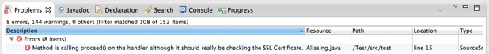

Installing and using the Fraunhofer SIT Vulnerability Scanner
1) Install the Eclipse
Feature Fraunhofer SIT Vulnerability
Scan for SSL Error Handlers
as described on the Fraunhofer SIT
Eclipse Update Site
-
2) The plugin will scan source files as they are edited and compiled. To conduct an initial scan, hit the button Scan all projects on the toolbar.
-
3) The scan can take a few seconds. Error markers will appear in the problem view as vulnerabilities are detected.

After having fixed the problem and having re-compiled the project, the problem marker should automatically disappear.
Note: The analysis is approximate. If an error marker is present, it is very likely that a vulnerability is indeed present. A missing error marker, however, does not automatically imply a correct fix.
Having trouble?
Please contact Eric Bodden at eric.bodden@sit.fraunhofer.de